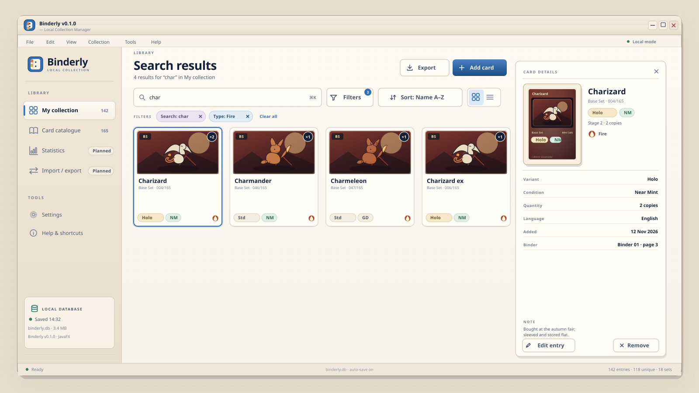
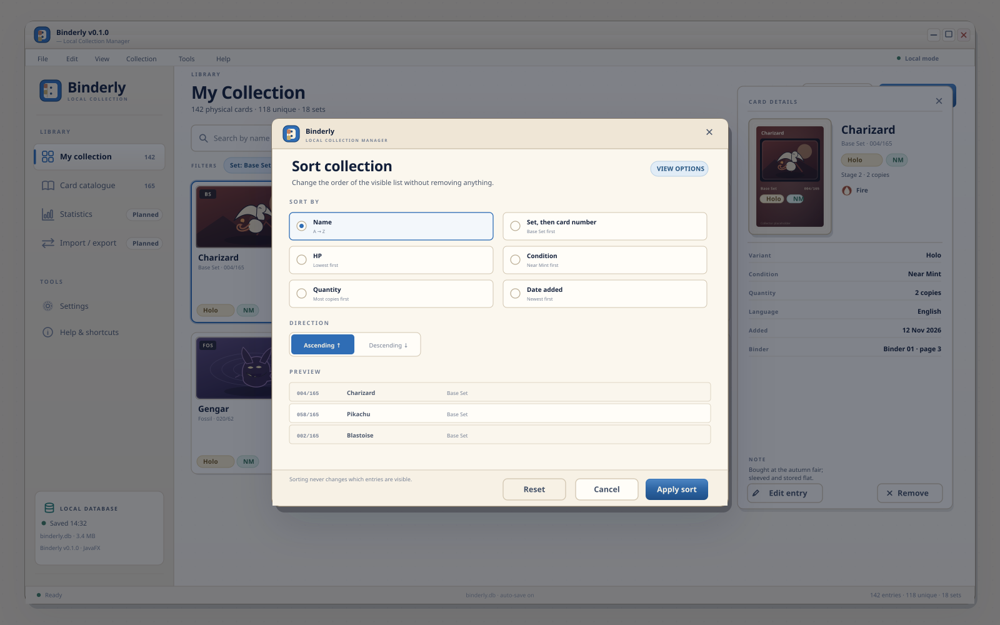
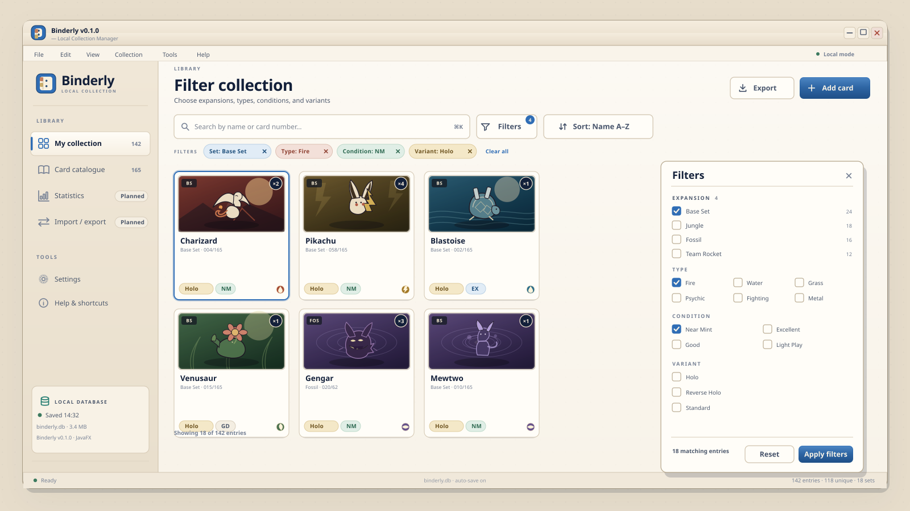

Search, sort & filter
Search asks “which card is it?”, sorting asks “what order should they be in?”, and filtering asks “which cards should stay in view?”. Three different questions — and not one of them changes a collection entry.
Three questions, three different jobs
Before you reach for a control, decide what you are asking. Search looks up a card, sorting reorders the list, and filtering narrows the set. None of them edits a collection entry.
find it, order it, narrow it
-
01 · Search
“Which card is it?”
Search finds a card by identity. Type a full or partial name, or a collector number such as 004/165. It looks for the print in the catalogue and for your copies in the collection.
- char
- 004
- 004/165
Hides cards? Only those that do not match.
-
02 · Sort
“What order should they be in?”
Sort reorders the current view. Pick one of 11 fields — name, expansion, number, category, type, stage, HP, retreat cost, condition, variant, or quantity — then choose ascending or descending.
- 11 fields
- Asc / Desc
- Missing values last
Hides cards? Never.
-
03 · Filter
“Which cards should stay in view?”
Filter narrows the visible set. Add conditions for expansion, category, Pokémon type, evolution stage, condition, or variant. Every selected filter must match at the same time.
- 6 filter groups
- AND logic
- View only
Hides cards? Yes — until you clear the filter.
-
The collector’s check
None of them edits your binder
Search, sort, and filter are view controls. They change what you see on screen — never the card, condition, variant, or quantity you recorded.
- Search = find
- Sort = reorder
- Filter = narrow
- Clear = restore
Search: find a card by identity
Search is a lookup. Type a full or partial name, or a collector number such as 004/165, and Binderly returns every card whose name or number matches the text.
“I know the card — where is it?”
What you can type
- Full card name
- Charizard returns the card with that name.
- Partial card name
- char returns Charizard, Charmander, Charmeleon, Charizard ex, and any other name containing those letters.
- Full card number
- 004/165 matches that exact print number.
- Partial card number
- 004 or 165 matches entries whose number contains it.
Search only narrows the current list. It does not reorder the cards, and it never edits an entry.

Catalogue searchDoes this print exist?
Find the card definition
- Looks through every known card, whether you own it or not.
- Confirms the name, expansion, number, category, type, stage, HP, and retreat cost.
- A result is a print — a description of a card that exists.
Collection searchDo I own a copy?
Find your recorded copies
- Looks only at entries already in your collection.
- Shows the condition, variant, and quantity you recorded for each copy.
- A result is your copy — the physical card in your binder.
Sort: reorder the view without hiding a card
Sorting changes the order of the cards already on screen. Choose one field and one direction — every visible card stays visible, including the cards with missing values.
same cards, different order
Eleven fields, two directions
The sort field decides what the list is ordered by. The direction decides whether it runs low to high or high to low.
- Card details
- Card name · Expansion · Card number · Card category
- Battle data
- Type · Evolution stage · HP · Retreat cost
- Your copy
- Condition · Variant · Quantity
Ascending goes A→Z, lowest→highest, or Basic→VSTAR. Descending reverses that order. Neither direction adds, removes, or edits a card.

Missing values are always placed last
A Trainer card has no HP. An Energy card has no evolution stage. Those values are non-applicable, not zero, so Binderly pins them to the end of the list.
The rule holds in both directions: reversing the sort does not bring missing values to the top.
Sort by HP ascending or descending and Professor Oak still appears after every card with an HP value. The same applies to retreat cost, evolution stage, and any other field a card does not use.
| # | Ascending ↑ | Descending ↓ |
|---|---|---|
| 1 | Pikachu · 60 HP | Charizard · 120 HP |
| 2 | Blastoise · 100 HP | Blastoise · 100 HP |
| 3 | Charizard · 120 HP | Pikachu · 60 HP |
| Last | Professor Oak · no HP | Professor Oak · no HP |
Filter: narrow the view without losing cards
A filter is a condition a card must satisfy to stay visible. Unlike sorting, filtering removes cards from view — temporarily. Every hidden card remains safely in your collection.
fewer cards, same collection
-
Filter 01
Expansion
Where the print came from. Choose one expansion to see only that set.
- Base Set
- Jungle
- Fossil
- Scarlet & Violet
- Sword & Shield
- Crown Zenith
-
Filter 02
Category
Separate Pokémon, Trainer, and Energy cards.
- Pokémon
- Trainer
- Energy
-
Filter 03
Evolution stage
Keep only the stages you are looking for.
- Basic
- Stage 1
- Stage 2
- VMAX
- VSTAR
-
Filter 04
Pokémon type
Match one of the 11 supported types. A dual-type card matches when it contains the selected type.
- Grass
- Fire
- Water
- Lightning
- Psychic
- Fighting
- Darkness
- Fairy
- Dragon
- Normal
-
Filter 05
Condition
Mint through Damaged, matching the condition recorded on each entry.
-
Filter 06
Variant
Keep a single finish so the binder view matches the physical copy.
- Standard
- Holo
- Reverse Holo

Several filters, one AND rule
A card must satisfy every selected filter at once. Adding another filter can only narrow the result further — it never widens it.
- Fire
- Pokémon
- Base Set
- Near Mint
- = Charizard only
In the sample collection, those four conditions leave exactly one card: Charizard. Any active text search is applied as one more condition on top.
Clear filters resets the six filter groups (and the illustrative ranges) but leaves the text in the search field untouched. Search and filters are independent controls that combine with AND.
Types and evolution stages
The filter vocabulary should match the card catalogue. These are the eleven supported Pokémon types and the main evolution stages.
Eleven Pokémon types
- Grass
- Fire
- Water
- Lightning
- Psychic
- Fighting
- Darkness
- Fairy
- Dragon
- Normal
A card with multiple types matches a filter when it contains the selected type. The interactive demo includes a dual-type example.
Evolution stages
- Basic
- Stage 1
- Stage 2
- VMAX
- VSTAR
- Other applicable stages
“ex”, “EX”, “GX”, and “Mega” are card designations, not evolution stages. They should not automatically be treated as a stage when filtering or sorting.
Try it: search, sort, and filter 23 sample cards
Search the set by name or number, reorder the full list, then stack filters and watch the count change. Everything runs in your browser with sample entries and original placeholder art.
- Search finds by name or number
- Sort reorders · hides nothing
- Filter narrows · AND logic
Filters combine with AND — sorting only reorders
Missing values, like HP on a Trainer card, stay last in both directions.
Illustrative control. HP range filtering is not confirmed for the current app.
Illustrative control. Retreat-cost range filtering is not confirmed for the current app.
Showing all 23 sample cards
Demonstration only. The sample entries and placeholder card art are illustrative, and this page does not connect to the desktop application. The actual application should be checked for the final field list and filter behaviour.
How the demo maps to the app
The controls above follow the behaviour described in the project plan. They are a teaching aid, not a claim that every control is already implemented.
- Search
- Full or partial card names and numbers. Catalogue search asks “does this print exist?”; collection search asks “do I own a copy?”.
- Sort
- One of 11 fields plus ascending or descending direction. Missing or non-applicable values appear last in both directions, and no cards are hidden.
- Filters
- Expansion, category, type, stage, condition, and variant. Multiple filters combine with AND, and the text search is applied on top.
- HP and retreat ranges
- Shown here as an illustration of a planned capability. They are not presented as a confirmed current feature.
- Clear filters
- Resets each filter control but keeps the text in the search field, matching the intended app behaviour.
The first public release has not been published. Search, sorting, and filtering are core features, but their final availability should be verified in the released application.